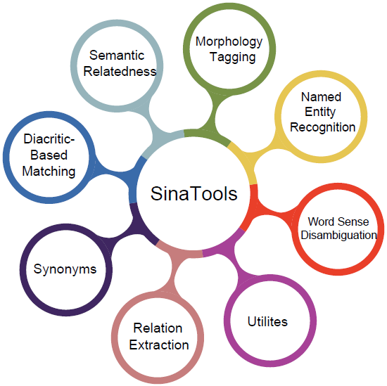

SinaTools
Open-source Toolkit for Arabic NLP
Python APIs, command lines, colabs, online demos, and many datasets. Outperformed all related tools in all tasks.

Modules:
-
Lemmatizer and POS tagger, outperform all related tools [1].
Performance: Speed (33K tokens/sec), lemmatization(90.5%), POS(93.8%)
from sinatools.morphology import morph_analyzer morph_analyzer.analyze('ذهب الولد إلى المدرسة') [{ "token": "ذهب", "lemma": "ذَهَبَ", "lemma_id": "202001617", "root": "ذ ه ب", "pos": "فعل ماضي", "frequency": "82202" },{ "token": "الولد", "lemma": "وَلَدٌ", "lemma_id": "202003092", "root": "و ل د", "pos": "اسم", "frequency": "19066" },{ "token": "إلى", "lemma": "إِلَى", "lemma_id": "202000856", "root": "إ ل ى", "pos": "حرف جر", "frequency": "7367507" },{ "token": "المدرسة", "lemma": "مَدْرَسَةٌ", "lemma_id": "202002620", "root": "د ر س", "pos": "اسم", "frequency": "145285" }]
-
Nested and Flat NER, 21 entity classes, and 31 entity subtypes.
Performance: Nested(89.42%) Flat(87.33%) - Wojood corpus, See [2, 3, 4].from sinatools.ner.entity_extractor import extract extract('ذهب محمد إلى جامعة بيرزيت') [{ "word":"ذهب", "tags":"O" },{ "word":"محمد", "tags":"B-PERS" },{ "word":"إلى", "tags":"O" },{ "word":"جامعة", "tags":"B-ORG" },{ "word":"بيرزيت", "tags":"B-GPE I-ORG" }]
-
Extract events and their corresponding arguments (agents, locations, and dates).
Performance:
WojoodHadath (93.99%)
WojoodOutOfDoman (74.90%)from sinatools.relations.relation_extractor import event_argument_relation_extraction event_argument_relation_extraction('اندلعت انتفاضة الأقصى في 28 سبتمبر 2000') #the output [{ "TripleID":"1", "Subject":{"ID": 1, "Type": "EVENT", "Label": "انتفاضة الأقصى"} "Relation":"location", "Object":{"ID": 2, "Type": "FAC", "Label": "الأقصى"} },{ "TripleID":"2", "Subject":{"ID": 1, "Type": "EVENT", "Label": "انتفاضة الأقصى"} "Relation":"happened at", "Object":{"ID": 3, "Type": "DATE", "Label": "28 سبتمبر 2000"} }]
-
Extend: Given one or more synonyms this module extends it with more synonyms.
Performance: 3rd level (98.7%), 4th level (92%) - Algorithm, See [10].from sinatools.synonyms.synonyms_generator import extend_synonyms extend_synonyms('ممر | طريق',2) [["مَسْلَك","61%"],["سبيل","61%"],["وَجْه","30%"],["نَهْج", "30%"],["نَمَطٌ","30%"],["مِنْهَج","30%"],["مِنهاج", "30%"],["مَوْر","30%"],["مَسَار","30%"],["مَرصَد", "30%"],["مَذْهَبٌ","30%"],["مَدْرَج","30%"],["مَجَاز","30%"]]
Evaluate: Given a set of synonyms this module evaluates how much these synonyms are really synonyms in this set, See [11]from sinatools.synonyms.synonyms_generator import evaluate_synonyms evaluate_synonyms('ممر | طريق | مَسْلَك | سبيل') [["مَسْلَك","61%"],["سبيل","60%"],["طريق","40%"],["ممر", "40%"]]
-
Computes the degree of association between two sentences across various dimensions, meaning, underlying concepts, domain-specificity, topic overlap, and viewpoint alignment.
Performance: correlation score (49%), See [9].from sinatools.semantic_relatedness.compute_relatedness import get_similarity_score sentence1 = "تبلغ سرعة دوران الأرض حول الشمس حوالي 110 كيلومتر في الساعة." sentence2 = "تدور الأرض حول محورها بسرعة تصل تقريبا 1670 كيلومتر في الساعة." get_similarity_score(sentence1, sentence2) Score = 0.90
-
Decides whether two Arabic words are the same or not, taking into account diacritization compatibility - Algorithm, See [12].
from sinatools.utils.implication import Implication word1 = "قالَ" word2 = "قْال" implication = Implication(word1, word2) result = implication.get_result() print(result) Output: "Same"
-
A set of useful NLP methods for sentence splitting, duplicate word removal, Arabic Jaccard similarity metrics, transliteration, and others.Jaccard Similarity Function: Calculates and returns the Jaccard similarity values (union, intersection, or Jaccard similarity) between two lists of Arabic words, considering the differences in their diacritization.
jaccard_similarity --list1="WORD1, WORD2" --list2="WORD1,WORD2" --delimiter="DELIMITER" --selection="SELECTION"Corpus Tokenizer: Receives a directory of files as input, splits the text into sentences and tokens, and assigns an auto-incrementing ID, sentence ID, and global sentence ID to each token.corpus_tokenizer --dir_path "/path/to/text/directory/of/files" --output_csv "outputFile.csv"Text Duplication Detector: Processes a CSV file of sentences to identify and remove duplicate sentences based on a specified threshold and cosine similarity. It saves the filtered results and the identified duplicates into separate files.text_dublication_detector --csv_file "/path/to/text/file" --column_name "name of the column" --final_file_name "Final.csv" --deleted_file_name "deleted.csv" --similarity_threshold 0.8
Performs three tasks together. Given a sentence as
input it tags (single-word WSD, multi-word WSD, and
NER) in this sentence.
Performance: single-word WSD (81.73%) multi-word WSD (88.92%) - SALMA corpus See [5].
Performance: single-word WSD (81.73%) multi-word WSD (88.92%) - SALMA corpus See [5].
from sinatools.wsd.disambiguator import disambiguate
disambiguate('تمشيت بين الجداول والأنهار')
[{
'concept_id': '303051631',
'word': 'تمشيت',
'undiac_lemma': 'تمشى',
'diac_lemma': 'تَمَشَّى'
},{
'word': 'بين',
'undiac_lemma': 'بين',
'diac_lemma': 'بَيْنَ'
},{
'concept_id': '303007335',
'word': 'الجداول',
'undiac_lemma': 'جدول',
'diac_lemma': 'جَدْوَلٌ'
},{
'concept_id': '303056588',
'word': 'والأنهار',
'undiac_lemma': 'نهر',
'diac_lemma': 'نَهْرٌ'
}]
Publication:
Tymaa Hammouda, Mustafa Jarrar, Mohammed Khalilia: SinaTools: Open Source Toolkit for Arabic Natural Language Understanding. In Proceedings of the 2024 AI in Computational Linguistics (ACLING 2024), Procedia Computer Science, Dubai. ELSEVIER.
Tymaa Hammouda, Mustafa Jarrar, Mohammed Khalilia: SinaTools: Open Source Toolkit for Arabic Natural Language Understanding. In Proceedings of the 2024 AI in Computational Linguistics (ACLING 2024), Procedia Computer Science, Dubai. ELSEVIER.